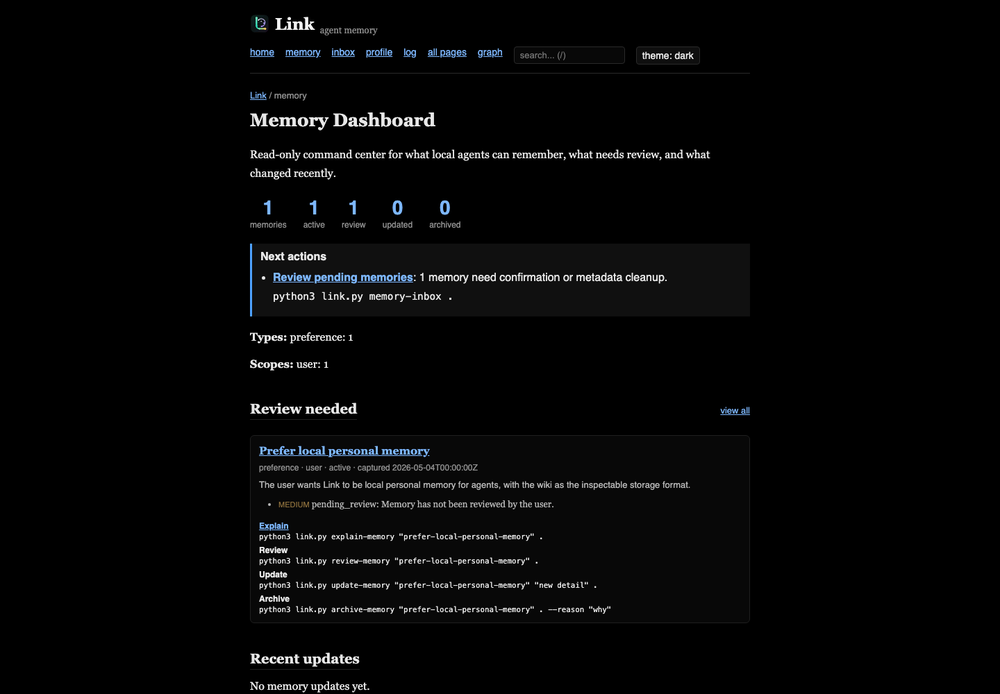
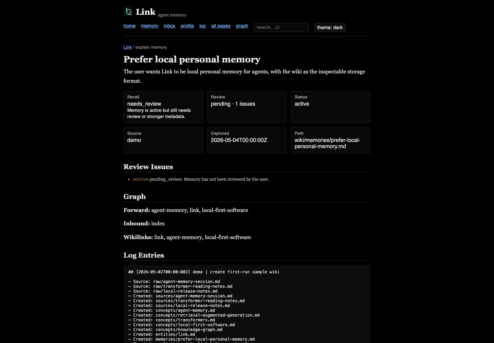

Personal memory
Preferences, decisions, project facts, and user context stay durable across agent sessions.
Source-backed Markdown memory for Codex, Claude, Cursor, Kiro, VS Code, Copilot, and any MCP client. Local files. Inspectable sources. Budgeted context.
The product
Link turns raw notes, transcripts, project context, and explicit memories into a source-backed wiki. Agents query a compact packet instead of reading your entire folder.
Preferences, decisions, project facts, and user context stay durable across agent sessions.
Raw sources compile into Markdown pages with citations, backlinks, and reviewable provenance.
One local memory works across MCP-capable tools through the same query, brief, graph, and memory lifecycle tools.
Smart query packets return the right memory, pages, graph neighborhood, and follow-up actions without flooding tokens.
No hosted backend, no telemetry, no cloud lock-in. Your memory stays on disk as plain Markdown.
Capture, propose, approve, review, archive, restore, forget, and explain what Link remembers.
First 2 minutes
The demo includes raw sources, wiki pages, one starter memory, backlinks, graph context, and a compact query packet.
git clone https://github.com/gowtham0992/link.git
cd link
python3 link.py demo
python3 link.py serve link-demo
# then try
python3 link.py query "why does Link help agents?" link-demo --budget small
python3 link.py brief "working on agent memory" link-demo
python3 link.py benchmark "agent memory" link-demoVisible trust
A memory is not a hidden vector. It is a Markdown page with status, scope, source, review state, graph links, and an audit trail.



Agent contract
Check readiness, brief before work, ingest raw files, remember explicit facts, query smart context, validate after writes, and explain why a memory exists.
Local-first
Link keeps the raw source, wiki, memories, backups, graph indexes, and performance cache on your machine. Open it in a text editor, Obsidian, Git, or the local web viewer.